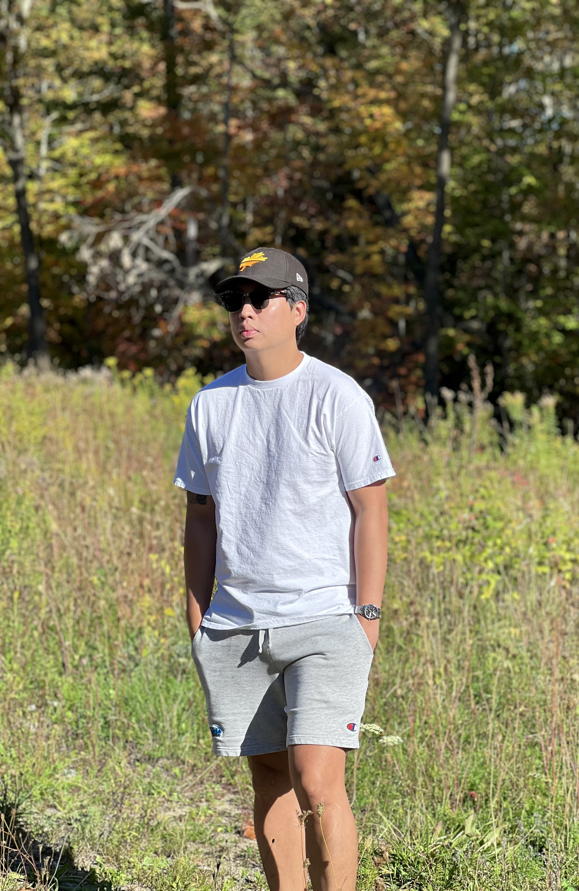

About / Xen
Behind the lens.

I'm Xen. Photography has always been something I've enjoyed. I like capturing the people around me, places I visit, and little things that catch my attention.
Nothing too serious. Just something I enjoy doing and a place to share what I've captured.